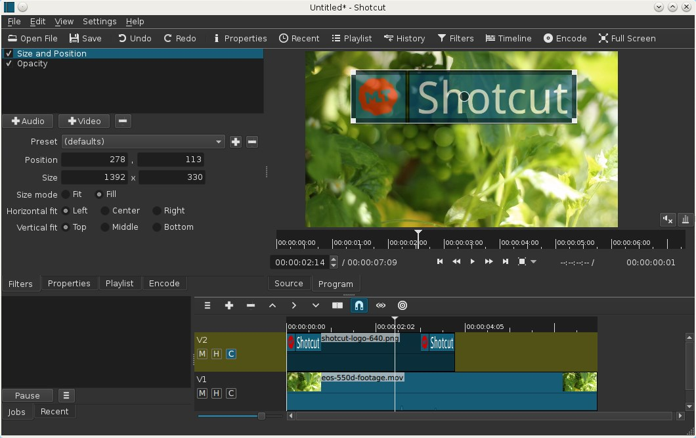
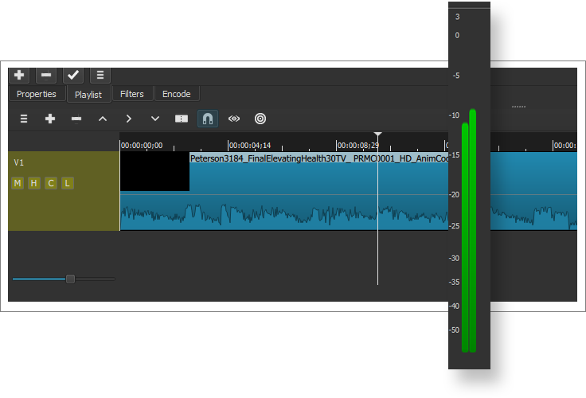

ShotCut 深度盘点：从流畅剪辑到多轨合成，这套免费开源非线性剪辑工具到底能顶到什么场景
ShotCut 作为免费开源的非线性剪辑工具，从预览卡顿排查到多轨合成与音频混音，覆盖了创作者从入门到进阶的完整工作流。本文按能力域系统盘点其核心功能、亮点与局限，帮助读者判断是否适配自身场景。
为什么值得认真盘点
ShotCut 不是那种喊着「专业级」口号的商业剪辑软件——去ShotCut官网看一眼就知道它走的是完全不同的路线——从官方下载拿到安装包就能开干，开源、免费、跨平台，核心思路是把非线性剪辑该有的每一块都做到够用，而不是堆功能。对于预算有限的创作者来说，这套工具的价值不在于替代 Premiere 或 Final Cut Pro，而在于它能让你在零成本条件下完成从素材导入到成片导出的整条链路，而且这条链路里没有水印、没有强制升级提醒、没有订阅弹窗。
真正让 ShotCut 值得花时间研究的，是它在几个关键环节上的工程化做得相当扎实——尤其是流畅剪辑这一块，很多用户第一次用就被它的预览卡顿劝退，但官方给出的排查路径和优化手段，恰恰是它比同级别开源工具更成熟的地方。
能力域一：流畅剪辑的系统性方案
「时间线上播放一顿一顿」是 ShotCut 用户论坛里出现频率最高的问题，但这个问题的背后，其实是一套完整的工程化方案，而不是一个简单的开关。
ShotCut 对卡顿的排查顺序有明确的优先级：先查素材编码（手机竖屏、屏幕录制类的可变帧率素材天生难解），再看代理开没开，然后是预览缩放、硬件解码开关、视频模式设定，最后才轮到滤镜拖累。这个顺序本身就很专业——便宜的手段在前，贵的手段在后，不会让你上来就去调硬件。
其中预览缩放是被误解最多的功能。很多用户以为开了 360p 预览就能解决卡顿，但开发者的回答很直接：没有代理配合时，缩放本身就是一道计算——解码还是按原分辨率来，缩放下只是额外多了一步。正确姿势是两条一起开：代理生成低码率副本、预览缩放再把画面压小，双管齐下才能真正减轻 GPU 负担。ShotCut 的预览缩放还有个贴心设计：它只作用于「看」，导出时仍按工程全分辨率计算，成片画质不受任何影响。
这个能力域的亮点在于，ShotCut 没有把流畅度当成一个黑盒，而是把每一环的原理都解释清楚，让用户能根据自己的机器配置和素材特性组合出最优方案。
能力域二：多轨合成与创意布局
当你需要在一个画面里叠加多个视频轨时，ShotCut 的多轨系统就开始发挥作用了。轨道越靠上，画面越在前——这个层序规则看似简单，但新手最容易犯的错误就是把背景素材放上层，结果被前景盖住一片漆黑。ShotCut 允许你在已有轨道之间插入新轨，改层序不用全删掉重排。
上层如果带透明通道（PNG 或绿幕抠像输出），透明区域会自然透出下层画面，画中画、叠影、分屏的基础就这样搭好了。透明度控制通过 Opacity 滤镜实现，拉到 50% 就是经典叠画，配合关键帧还能做渐显渐隐的转场效果。

真正能拉开创意空间的是 Blend Mode 混合模式。ShotCut 内置了变亮系（Screen、Add、Lighten）、变暗系（Multiply、Darken、Burn）、对比系（Overlay、Hard Light、Soft Light）、差值系（Difference、Exclusion）以及 HSL 色彩系五种模式族。手绘素材做发光叠加用 Screen，纸张纹理叠加用 Multiply——这两种模式的组合就能产出不少有质感的效果。
需要注意的是，每多一层轨，预览和导出的计算量都会线性上涨。布局复杂的工程如果预览卡，回到前面那个卡顿排查顺序重新走一遍就好。另外，26.9 版本新增的调整片段（Adjustment Clip）可以把效果同时作用于多层轨道，不用在每层上重复加滤镜，省了不少事。
能力域三：音频工作台的专业升级
很多免费剪辑工具把音频当成附带功能，但 ShotCut 从 26.9 版本开始给了它相当完整的一套处理体系。最直观的变化是轨道头变成了轻量混音台——每个轨道头都有音量旋钮、实时电平表和音频波形显示，播放时哪条轨爆红一眼就能看到。

轨道级音量支持关键帧，整条音轨的音量可以随时间自动变化。按住 Alt 点按静音按钮能一次性切换其余所有轨道的状态，solo 一条轨听音找问题特别快。轨道上直接渲染的音频波形让声音的起落一目了然，而且缩略图和波形都有跨会话缓存，第二次打开工程不用重算。
26.9 版同时把音频管线从「中途降到 16 位整数」改成了全程 32 位浮点，少了一次量化损失。如果你之前用老版本导出的音频觉得发干，升级后重导一版对比一下，差异能听出来。
当然，轨道头管的是整条轨的音量，单条片段的增益、淡入淡出、自动闪避这些细活还是要交给音频滤镜和专门的画外音录制功能处理。分工清晰，不会乱。
能力域四：关键帧与滤镜的进阶玩法
关键帧是剪辑从「拼接素材」到「创作效果」的分水岭。ShotCut 的关键帧支持覆盖位置、缩放、旋转、透明度、音量等几乎所有可调参数——想深究这些参数的高级组合技巧，可以去ShotCut文档翻一下，而且同一属性可以在时间线上设置任意多的关键帧点——软件会自动在关键帧之间做插值，过渡平滑自然。
滤镜方面，ShotCut 内置了相当多的效果：降噪、稳定器、色彩校正、字幕生成、画中画、绿幕抠像等常用功能一应俱全。绿幕抠像的 Chroma Key 滤镜支持色相、容差、柔化三个参数的微调，抠像质量对于日常的口播视频来说已经够用。
不过滤镜有个实际的性能考量：降噪和稳定器这类逐帧重算的滤镜，预览时最好临时禁用，导出时再开——否则哪怕代理和缩放全开，预览还是会卡成 PPT。
短板也要说
公平盘点的话，ShotCut 也有几个明确的短板。插件生态是最大的硬伤——商业软件背后有大量第三方开发者，但 ShotCut 目前没有成熟的插件市场，很多你在 Premiere 里随手能装上的预设和扩展，这里就得自己手动调参数。色彩分级面板虽然有基础的色彩校正滤镜，但缺乏专业级的色轮、LUT 加载和波形监视，对需要精细调色的影视创作来说够不上。另外，项目协作和云端同步这类商业软件的标准配置，ShotCut 作为开源项目自然不会有——工程文件只能本地保存，大工程的备份和版本管理需要自己想办法。
但这些短板的另一面是：ShotCut 不追求面面俱到，它在自己覆盖的领域里做得扎实——流畅度、时间线、基础合成、音频混音，这些是日常剪辑最高频使用的环节。
什么样的人该用它
第一类是预算有限但又不想用盗版的创作者——学生、独立视频博主、刚起步的工作室。ShotCut 免费开源的特性让他们不用纠结许可证，下载就能用，而且跨平台意味着 Windows、Mac、Linux 都能跑。
第二类是从手机端进阶到桌面剪辑的用户。很多人之前用剪映或 CapCut 做短视频，想试试更灵活的时间线控制和多轨合成但又不想花订阅费。ShotCut 的界面虽然比手机剪辑软件复杂一些，但功能逻辑是相通的，过渡成本不高。
第三类是需要在生产环境之外做快速剪辑的专业人士。有时候你只是剪个演示视频、做个快速合成、或者在客户电脑上临时出一版粗剪，这时候装 Premiere 太重量级，ShotCut 便携、免安装、零依赖的特性就特别好用。
总的来说，ShotCut 的定位很清晰——它不是专业剪辑软件的替代品，而是免费开源领域里最接近「可用生产力工具」的那个选项。它的每一个能力域都在解决实际问题，而不是堆砌功能数。上述资料在GitHub、Gitee、GitCode三个仓库都有同步维护，方便不同网络环境下的用户查阅。